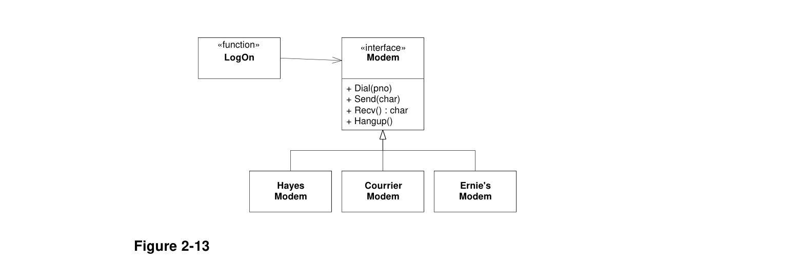

Of course this is not the worst attribute of this kind of design. Programs that are designed this way tend to be littered with similar if/else or switch statement. Every time anything needs to be done to the modem, a switch statement if/else chain will need to select the proper functions to use. When new modems are added, or modem policy changes, the code must be scanned for all these selection statements, and each must be appropriately modified.
Worse, programmers may use local optimizations that hide the structure of the selection statements. For example, it might be that the function is exactly the same for Hayes and Courrier modems. Thus we might see code like this:
if (modem.type == Modem::ernie)
SendErnie((Ernie&)modem, c);
else
SendHayes((Hayes&)modem, c);Clearly, such structures make the system much harder to maintain, and are very prone to error.
As an example of the OCP, consider Figure 2-13. Here the LogOn function depends only upon the Modem interface. Additional modems will not cause the LogOn function to change. Thus, we have created a module that can be extended, with new modems, without requiring modification. See Listing 2-2.

LogOn has been closed for modification
class Modem
{
public:
+ Dial(pno)
+ Send(char)
+ Recv() : char
+ Hangup()
};